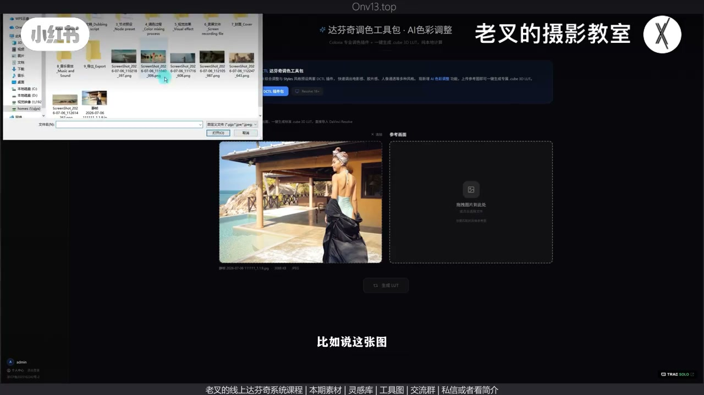
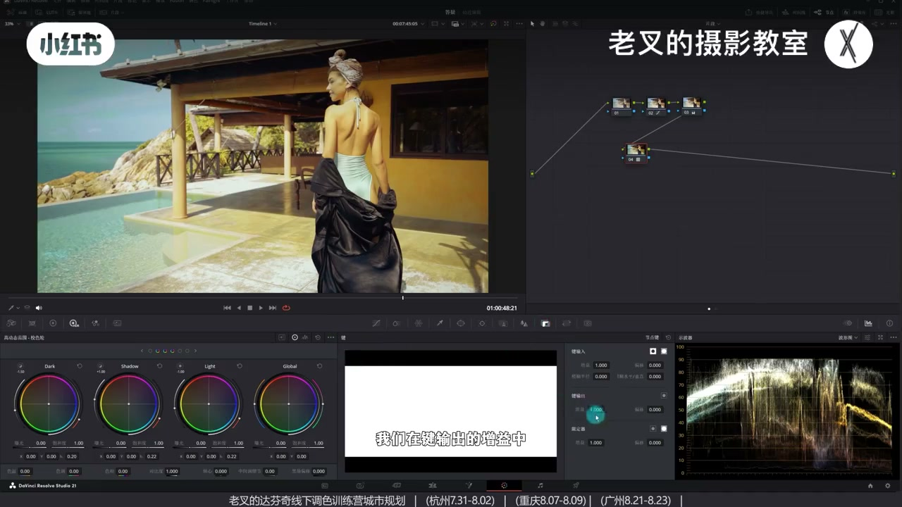
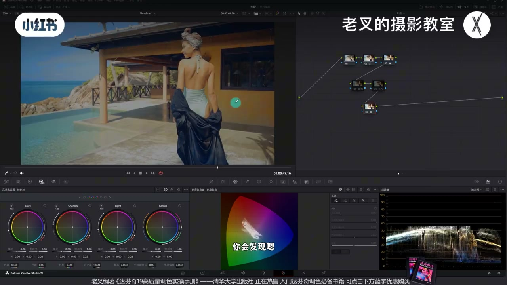
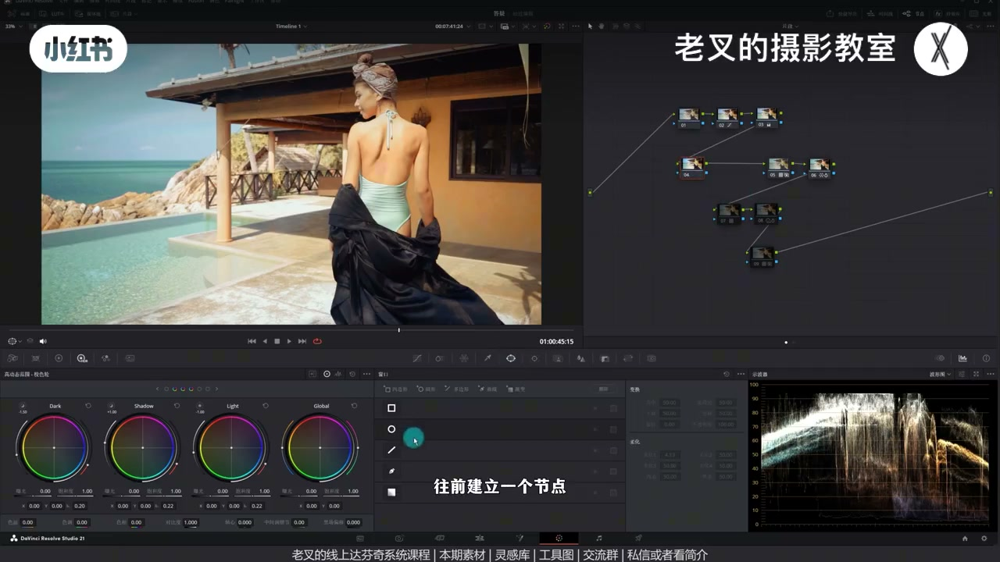
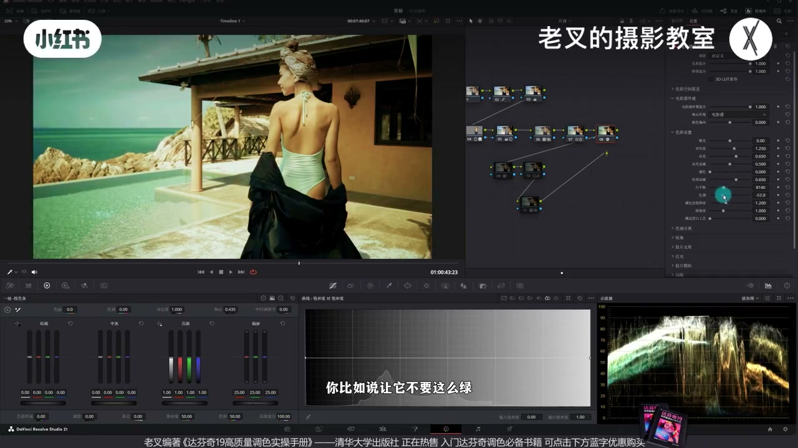

内容要点
一键仿色做 LUT 工具更新：因无自定义分区、全局易偏，初次生成力度调小，并新增网页微调（色温/色调/对比等）。下载后须在还原之后新节点套 LUT，用键输出增益降不透明度；LUT 后新问题再后插节点修。参考须尽量同拍摄条件；LUT 当颜色干扰，Shift+S 前插先调光，工具再强也要画面分析。
知识结构
无分区→初生成减弱；网页加色温/色调/对比再下载。
末节点套用；键输出降增益；后插降黄密度+蜘蛛网。
第二风格可微调；暗调室内 LUT 对晴天人像不合适。
Shift+S 前插主体/外部压暗；跟踪补帧；外观冲动器可选。
工具给的是全局影调/颜色起点，不是分区大师。选型对齐天气与光比；套在还原后，力度用键输出；偏差在 LUT 后修。前插重塑曝光、跟踪与外观仍要会。
00:00-01:47更新：弱初生成 + 网页微调参数
上期一键仿色工具测试中普遍遇偏；网址藏视频顶部。功能无自定义分区，局部必有偏差，故新增调整滑块，且初次生成力度故意调小、预览更淡。
简单还原后抓静帧拖「原始画面」，右侧选风格参考→生成 LUT→预览。觉得不够暖可加色温、减色调偏黄绿、少加对比，再下载。

01:47-03:12达芬奇套用：后节点 + 键输出 + 修黄绿
LUT 必须拖进新建节点，勿在还原节点上干扰。力度大则到「键」里降键输出增益（降不透明度）。
对比参考：参考暖偏红，己方黄绿不适——这是套 LUT 后新问题，须在 LUT 后建节点：降皮肤/黄密度透一点，蜘蛛网略降黄饱和。通看可有度假慵懒感，且很快。

03:12-04:43换风格：可微调，也要承认「不合适」
换更灰的参考：生成偏灰、色偏暖——微调降色温、略加暗部冷、加对比再套。参考本就闷暗，晴天人像可抬 Light 找高光、降蓝青饱和，不必像素一致，可当一种风格。
暗调室内参考生成的 LUT 对人像「没法看」——不是生成器坏了，是拍摄情况不一致。晴天找晴天风，阴天硬套必错；故套 LUT 后仍要调色优化与画面分析。

04:43-07:50LUT 当前当颜色干扰：先调光，再谈工具
想突出人物：Shift+S 在 LUT 前建节点，遮罩略加对比；Option+O 外部压四周重塑曝光。遮罩要跟踪，跟丢可切帧模式补关键帧。
风格不够强可在最后套电影感外观冲动器并调参数。反馈可私信或网页右上角；也会当面内测。工具加速给色，分析能力不能丢。


完整转录（318段）
以下文本由 Whisper medium 模型自动转录，可能存在少量识别误差，已尽可能修正。
上一期分享过我们做的这个一键仿色做辣子的工具
已经有不少朋友参与了测试
但是大家也普遍的遇到了一些问题
这一次算是一个更新视频
也给大家分享一下新功能
网址我放在评论区会被吞
所以我就藏住在视频顶部
大家可以自行前往
buff叠在最前面
不好用别骂我
我们来到工具
因为我们这个功能呢
是不具备自定义分区调整的能力的
所以一定会出现局部内容产生偏差的情况
所以我们新增了一个调整滑块
比如说这个画面
在我们给它做好了简单的还原之后呢
抓取一个竞争
把它拖到网页中的原始画面
然后在右侧参考画面中
选择一个风格化的参考
比如说这张图
我们点进来了之后
点击下方生成LUT
生成好了之后
下方就会有一个预览画面
我们可以偷动的来看这个LUT
应用之后的大致情况
其实跟参考图有点接近对吧
那大家不知道有没有发现
我们这一次生成的这个预览结果
比起上一次要淡了很多
为啥呀
因为我们刚刚说那个情况
它是不具备自定义分区调整的
也就是说它是全局颜色干扰
那么它就会极大概率产生偏差意外的情况
所以我们在初次生成LUT的时候
力度就给它调小了
但如果说你觉得还有差距的话
我们在网页中
增加了这个板块
微调参数的一个行为
你可以根据自己的需求来做一定的调整
比如说现在
我觉得大体的感觉是有的
但是颜色还是有一点点不同
不够暖
所以我们可以给它增加一点色温
给它加到
然后再给它减一点点色调
因为我觉得它不够黄绿
整体结果要偏黄绿对吧
它是这种西洋的暖调的感觉
也可以给它再加一点点对比度
少加一些
那这样看起来就跟参考图会更加接近了对吧
然后我们就可以点击下方下载LUT
下载好LUT之后
我们可以给它拖进达芬奇
那我已经拖好了
我们可以在LUT库里面找到
要应用它的话
一定要在后面新建一个节点
不要在前面还原节点上去干扰它
我们可以把这个LUT拖进新建的节点中
一套
你看这个风格是不是就有了
如果你套上去了之后
感觉这个力度有点太大了
你可以来到键
这里有个键这个功能
我们在键输出的增益中降低它的竖直
也就是降低LUT节点的不透明度
稍微给它降低一点
我就到这个情况
这种结果就挺好了对吧
可是我们再打开参考图
你会发现一个情况
在参考图中
它所有的暖色
它其实有点偏红的对吧
你看肤色包括这里的墙面
而我们的画面就是黄绿黄绿的
这个不太舒服
所以我们需要再加一个节点
来解决这个问题
为什么是加一个节点呢
因为这个是由于LUT套上之后
产生的新问题
所以我们要在LUT之后再建立节点
而不是在之前
首先我先降低了皮肤的密度
让皮肤也就是这些黄色
都稍微能够透一点
然后再在老板蜘蛛网
稍微给它降低一点黄色的饱和度
让它到这个程度
好
我觉得这样就挺好了
对吧
那这样一条
我们就能够给画面带来一个
非常强的一个风格
我们通天来看一看
其实在之前
这里就是有那种度假的感觉
特别符合我们这个场景的这个颜色风格
而且最重要的是它非常快
你不需要调太多的东西
你这种闷闷的慵懒的感觉
能够通过这个功能快速的去实现
挺好的
那如果说换一个风格呢
比如说我们来尝试一下这个风格
换一张图
我们用这张
完全不同的风格对不对
但是有接近的物体
那我们也一样给它生成一个LUT
生成好了之后你会发现
非常的灰
因为它与这个参考图它就非常灰
那这个灰呢
跟我们这个曝光情况是不一致的
而且颜色我们比它要稍微暖了一点
那我们可以在微调参数中
给它把色温稍微降一点
往左拉
拉到底吧
也可以稍微再加一点点暗部的冷色
这个功能大家可以自己去挖掘
然后再给它加一点对比度
那不要这么灰
好
大概到这个程度
我们同样给它下载LUT
然后再给它拖到达芬奇
同样我已经拖完了
我们可以再加一个节点
拉到第三排来尝试一下
刚刚那个节点是这个风格
那这个风格一套了之后
你会发现
嗯
感觉又对又不对
那确实因为参考图
它就是偏暗掉的
对吧
它非常闷
它闷的闷是因为它这个天气
但是我们这个画面就不适合这么闷
那我们这个时候就应该
根据我们已有的情况去做微调
首先感觉它闷是因为它缺了高光
我们可以再来一个节点
稍微提高一点Light色冷的曝光
把它的高光稍微找回来一点
好
找回来了点之后能舒服不少
对吧
那同样我们可以再稍微降低点
蓝色和青色的饱和度
让它蓝色不要这么艳
因为它的参考图
它这个蓝色就是非常淡的蓝
对吧
那到这个程度
我们就能够也给画面带来一种风格
你说这个风格好不好看呢
我倒是觉得挺有意思的
那好不好看这个也是见仁见智
虽然和参考图不一样
但对于我们这个画面来讲
也属于一种风格挺好的
然后我们也可以再尝试另外一种风格
比如说我们用这个场景
它是个暗调室内的
我们给它生成一个LUT
那生成好了之后你会发现
你怎么看都是不对的
那当然这个LUT呢
我也做好了
我给它拉到节点中
这个LUT一套
你会发现
就没法看
对吧
没法看
就算我们降低了它的这个键输出
它也没法看
为啥没法看
原因很简单
不是我们这个生成的LUT不行
而是它不合适
我们需要让我们的画面
与参考画面的拍摄情况
尽可能一致
你是晴天
我们找晴天的那个风格
一定是相对舒服的
但你如果找阴天
那肯定不对
那也正是因为这个原因
我们在应用了LUT之后
其实还是需要去做
适当的调色优化的
所以我们对调色的这个流程也好
画面分析也好
这种学习还是要持续
那后面呢
我也会结合我们这个功能
来应用在我们的
实操调色流程中
我们可以再延伸一个点
比如说我们按照第一种风格
这种风格挺好的
对吧
但是你觉得我希望
让人物更加突出怎么办呢
那么我们其实应该在
这个节点之前
我们可以把这个LUT节点
当作我们颜色干扰的节点
而我们应该要先调光
或调色对不对
所以我们需要按住Shift加S
往前建立一个节点
然后呢
可以给人物做一定的调整
什么意思
比如说
我想让人物
我先给它画一个遮罩
稍微给它增加一点对比度
不用加太多
重点不在它
重点在于我们需要按照LUT加O
来建立一个外部节点
把其余部分稍微给它压暗一点
我举这个例子而已
好不好看再说吧
你看那这样一调的话
我们是不是把曝光给它
做了一定的重塑
让整个画面的主体更加突出
对吧
你像类似这种情况也是需要做的
那这时候就是我们对画面
需要去做分析
并且我们对我们的需求要去明确
同样的
我们对达分析所有的这功能使用
还是照旧
都是要去了解
比如说我对人物画了
知道这我要跟踪对不对
那我点了跟踪
我们让它快速的跑一下
我加个速
你看这个时候
在这一部分
它是不是跟丢了
跟丢的话
我们也可以通过切换成帧模式
在这个地方打上一个帧
然后在开头也把它移动过来
让它跟上这一帧
那这样就跟上了
所以我们工具的使用还是照旧
该怎么用还是要怎么用
同样的
如果你觉得这个画面中
它这个风格还是不够强
也可以在所有的节点之后
套用一个达分析自带的电影感外观冲动器
通上去之后
它也会给你赋予一个更强的风格
里面的一些参数
你也可以去做调整
你比如说让它不要这么绿
稍微带点屏
对吧
然后呢
饱和度稍微高一点
我举个例子而已
你看这种结果是不是挺好的
或者你给它上一个遮浮
那我想说那个点其实在于
可以利用我们这个功能
快速的去给画面带来一个颜色
或者是一个基础的影调风格
但是做完了之后呢
我们对于画面
还是需要有一定的分析能力
我们需要去明确我们该怎么去做
该怎么去调
该怎么去优化我们的画面
大家如果在使用的过程中
遇到了任何问题
假如说你觉得这个断层了
在某种情况下实现不了
之类之类的
你都可以私信
或者看我姐姐来找我
我也会在接下来几次的一个
星霞客去做当面的一个内测测试
你在线上尝试了之后呢
如果你发现问题
也可以把你的图
参考图以及应用之后的图都发给我
我会想办法给它优化的
或者你也可以在网页的右上角点反馈
在这个地方你也可以选择ASI调整
把你遇到的情况也告诉我
好了
那这期就到这里
886